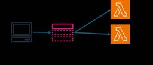
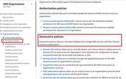

サーバーワークスエンジニアブログ
https://blog.serverworks.co.jp/
クラウド専業インテグレーター・サーバーワークスの中の人があらゆる技術についてお届けします。
フィード
【AWS Control Tower 解体新書】 CloudTrail統合編
サーバーワークスエンジニアブログ
Landing Zone 4.0によってさらに柔軟になったAWS Control TowerのCloudTrail統合機能と、その詳細設定を紹介。
3日前

生成AI推進担当に聞く、AI駆動開発を現場に根付かせる実践ノウハウ ── ツール選定・チーム展開・ハルシネーション対策まで
サーバーワークスエンジニアブログ
はじめに プロフィール ツールの使い分け：マルチモデルで弱点を補う チームへのAI駆動開発展開：「使ってください」だけでは定着しない 仕様駆動開発の実践：小さく作って積み上げる ハルシネーション対策：公式情報を必ず参照させる スキル化とSuperpower：繰り返し作業はすべて自動化する 出力レビュー：AIらしさを除去する まとめ：針生さんの実践ノウハウ早見表 おわりに はじめに こんにちは！クロスインダストリー第1本部クラウドモダナイズ課のローです。 アプリケーションサービス本部（AS本部）でAI駆動開発の社内推進と外向けサービス展開を担っている針生 泰有（はりう やすとも）さんに、実践的な…
3日前
Claude Skillで使う2種類のサブエージェント ー context: fork と agents/ ディレクトリの違いを精査する
サーバーワークスエンジニアブログ
はじめに 前提：スキルとサブエージェントの既定の動き 仕組み1：context: fork ―― スキル自身をサブエージェント化する 仕組み2：agents/xx.md ―― スキルが指揮役として複数を束ねる 決定的な違い：サブエージェントは入れ子にできない 比較表 使い分けの指針 つまずきやすいポイント おわりに はじめに ClaudeでSkillを書いていると、重い処理や独立した調査を、コンテキストを節約する観点でサブエージェントにまかせたい場面がよくあります。 その手段として、SKILL.mdのfrontmatterに context: fork を書く方法と、スキルフォルダの agen…
3日前

【CloudFormation/SAM】Amazon SNSトピックのサブスクリプションの作り方3つの方法
サーバーワークスエンジニアブログ
こんにちは、サービス開発部のくればやしです。 今回は、CloudFormation(SAM)を使ってAmazon SNS トピックのサブスクリプション（エンドポイントタイプはLambda関数を想定）を作成する方法を紹介します。 サブスクリプションの作り方は大まかに3パターンあるため、それぞれの方法を紹介します。 前提: トピックとサブスクリプションの関係 CloudFormationによる作成方法の説明の前に、Amazon SNSのトピックとサブスクリプションの関係についておさらいしておきます。 ユーザはトピックをまず作成し、そのトピックにLambda関数やメール等のサブスクリプションを登録し…
3日前
Claude Codeのメモリ要件 公式仕様とヘビーユーザーに必要なPCスペック
サーバーワークスエンジニアブログ
はじめに サーバーワークスの池田です。 Claude Code を複数セッションで日常的に動かしていると、ある日突然マシンが固まる経験をされた方は少なくないはずです。公式のシステム要件には「RAM 4GB+」とだけ書かれていますが、実際にヘビーに使っているとこの数値が現実離れしていることに気付きます。 この記事は 物理RAMとPCスペックの話 に絞ったまとめです。CLAUDE.md やコンテキスト圧縮、永続メモリ（Agentmemory 等の OSS）といった「AI 側のメモリ」の話ではありません。Claude Code を動かすマシン側の RAM、CPU、SSD についての話です。 公式の要…
4日前
Skill Builder で Systems Managerを学んでみる
サーバーワークスエンジニアブログ
エデュケーショナルサービス課の井澤です。普段は、お客様向けのAWSトレーニングを担当しています。 最近、『Cloud Operations on AWS』というコースを開講しました。AWS上で稼働しているシステムについて、どのように運用したらよいか学べる３日間のトレーニングです。多くのお客様のニーズに合うと思います。 『Cloud Operations on AWS』の詳細については、こちらのページをご覧ください！ www.serverworks.co.jp さて、本記事では、AWSが提供するオンライン学習プラットフォームAWS Skill Builderで提供されている、AWS System…
4日前
OpenAI Codex デスクトップアプリで Amazon Bedrock の GPT-5.5 を利用する方法
サーバーワークスエンジニアブログ
OpenAI Codex デスクトップアプリで Amazon Bedrock の GPT-5.5 を利用する方法 こんにちは、サーバーワークスで生成AIの活用推進を担当している針生です。 2026年6月1日、Amazon Bedrock で OpenAI の最新モデル GPT-5.5 が一般提供（GA）になりました。 Codex デスクトップアプリ（以下 Codex アプリ）の接続先を Amazon Bedrock に向けるだけで、GPT-5.5 などを使えます。やることは、AWS コンソールでの API キー発行と、~/.codex/config.toml・~/.codex/.env の 2…
4日前
Microsoft APM でパッケージマネージャのようにClaude Codeの設定（MCP・スキル・エージェント）を配布してみる
サーバーワークスエンジニアブログ
はじめに APM とは やりたかったこと インストール 1リポジトリで複数パッケージを管理する パッケージの中身を作る apm.yml（マニフェスト） instructions（共通ルール） skills（スキル） agents（エージェント） 利用者側でインストールしてみる 何がどこに展開されるか 複数パッケージを入れるとどうなる アップデート 使ってみた所感 メリット デメリット・注意点 まとめ はじめに こんにちは。アプリケーションサービス本部ディベロップメントサービス3課の北出です。 業務で Claude Code を使うことがあるのですが、プロジェクトごとに「MCPサーバの設定」や「…
4日前
OpenAI Codex CLI を Amazon Bedrock 経由で使う (aws login 認証編)
サーバーワークスエンジニアブログ
こんにちは。高橋 (ポインコ兄) です。 2026年6月1日、OpenAI の GPT-5.5 / GPT-5.4 モデルと Codex が Amazon Bedrock で一般利用可能 (GA) になりました。 本記事では、AWS CLI の aws login コマンドで認証し、Codex CLI を Amazon Bedrock 経由で GPT-5.5 に接続して使う手順を紹介します。 関連記事 Codex CLI とは Bedrock Mantle とは aws login とは 前提条件 IAM 権限の注意事項 手順 1. AWS CLI のバージョン確認 2. aws login …
4日前
Claude Certified Architect – Foundations を受験しました
サーバーワークスエンジニアブログ
はじめに 試験の概要 筆者について 英語について 学習方法と各リソースの評価 Anthropic Academy（Claude 101 / Claude Code in Action） 試験ガイドの熟読（最重要） 公式模擬試験 私が実践した学習フロー まとめ はじめに 注記： 本記事は受験直後の感想をまとめたものです。執筆時点では合否結果が未確定のため、その点をご了承の上お読みいただけますと幸いです。結果が出次第、追記予定です。 Anthropicが提供するClaude関連の認定資格「Claude Certified Architect – Foundations（CCA-F）」を受験しました…
5日前
ついに来た！Amazon Bedrock で OpenAI の最新モデル（GPT-5.5 / GPT-5.4）が使えるようになったので動かしてみた
サーバーワークスエンジニアブログ
ついに来た！Amazon Bedrock で OpenAI の最新モデル（GPT-5.5 / GPT-5.4）が使えるようになったので動かしてみた こんにちは、サーバーワークスで生成AIの活用推進を担当している針生です。 2026年6月1日、Amazon Bedrock で OpenAI の最新モデルが一般提供（GA）になりました。 GPT-5.5, GPT-5.4, and Codex from OpenAI are now generally available on Amazon Bedrock これを受けて、AWS が公開した Get started with OpenAI GPT-5…
5日前
Amazon Aurora PostgreSQL＋pgvectorで、今から学ぶベクトルデータベース 1
1
サーバーワークスエンジニアブログ
こんにちは。 アプリケーションサービス本部、DevOps担当の兼安です。 今回は、今から学ぶベクトルデータベースの基礎知識と題して、ベクトルデータベースの基本的な概念や基礎用語を紹介します。 本記事のターゲット ベクトルデータベースとは ベクトル空間のイメージ ベクトルデータベースの用途 回答精度を向上させる技術：RAG RAG とは RAG の処理フロー ベクトルデータベースの検索 検索の流れ 検索の実装コード Embedding（＝ベクトル化） Embeddingの実装コード 次元数 Embeddingモデル コサイン類似度、コサイン距離 top_k 正規化 ベクトルデータベースへのデータ…
5日前
Git シークレット検出ツールを比較してみる（2026 年版） 1
サーバーワークスエンジニアブログ
Git リポジトリへのシークレット混入を防ぐツール git-secrets、gitleaks、Betterleaks を 2026 年時点の情報で比較。導入手順、検出精度、CI/CD 統合、メンテナンス状況の観点から選定の判断軸を整理しました。
5日前
Claudeがコードを書くときに何を参考にしているか知ると、プロンプトが変わる
サーバーワークスエンジニアブログ
はじめに 「Claudeにコードを書いてもらったけど、なんか微妙にズレてる……」 そんな経験をしたことはないでしょうか。指示した通りのコードは書いてくれるのに、プロジェクトのスタイルと合わなかったり、使っているライブラリのバージョンと噛み合わなかったり。 実はこれ、Claudeの能力の問題ではなく、Claudeに渡す情報の問題であることがほとんどです。 Claudeがコードを生成するときに何を参考にしているかを理解すると、自然と「伝えるべきこと」が見えてきます。この記事ではその仕組みと、すぐに使えるプロンプトのコツを紹介します。 Claudeがコードを書くときに参照しているもの 1. 学習済み…
5日前

AWS Organizations の「管理ポリシー」が「宣言型ポリシー」に名称変更されました
サーバーワークスエンジニアブログ
セキュリティサービス部 佐竹です。2026年5月6日に AWS 公式ドキュメントがアップデートされ、AWS Organizations のポリシーに関する名称変更が行われました。まず、管理ポリシー (Management policies) の名称が変更され、宣言型ポリシー (Declarative policies) となりました。
6日前
Claude Code更新 脆弱性を自動検知・スキル自動ロード【5/24〜30】
サーバーワークスエンジニアブログ
はじめに サーバーワークスの池田です。 今週（5/24〜5/30）の Claude Code は v2.1.152 から v2.1.158 まで6バージョンがリリースされました（v2.1.151 と v2.1.155 は npm に公開されていない欠番です）。 期間中には Claude Opus 4.8 と dynamic workflows という大型のリリースもありました。これらは別記事で詳しく扱っているため、本記事では CLI 本体とプラグイン周りの実務的な変更を中心にまとめます。 なかでも注目は、コードの脆弱性をその場で検知・修正する security-guidance プラグインと、…
6日前

FSx for NetApp ONTAP のログの種類と用途についてまとめてみた
サーバーワークスエンジニアブログ
はじめに FSx for NetApp ONTAP では、ONTAP 側で取得可能なログとして4種類が存在します。 各ログの概要と用途についてまとめてみました。 FSx for NetApp ONTAP のログ種別 1. ONTAP 管理監査ログ 用途 CLI・REST API・ONTAPI 経由で実行された管理操作を記録するログです。 ボリュームの作成・削除、設定変更、ユーザー管理など、管理者が行った操作証跡を残します。 2. ファイルアクセス監査ログ 用途 SMB/NFS 経由でのユーザーによるファイル・ディレクトリ操作を記録するログです。 ファイルの作成・読取・書込・削除・権限変更・ログ…
7日前

Amazon BedrockでAIモデルのパラメータ検証していたらカップラーメンが破壊されるとか言ってきた
サーバーワークスエンジニアブログ
今回のブログでは、Amazon Bedrock の Playground で Amazon Nova Lite 1.0 に同じプロンプトを投げ、温度（Temperature） だけを変えて出力がどう変わるかを実際に試した結果を共有します。AWS Certified AI Practitioner（AIF-C01）の試験対策の一環で実際に触ってみたことをまとめた内容になります。 用語解説 温度（Temperature） トップP（Top P） トップK（Top K） 検証の前提 検証準備 Amazon Bedrock の Playground を開く モデルを選択する パラメータ設定パネルを開く…
8日前
Claude のプロンプトキャッシュの勘所と実プロジェクトでのコスト削減効果
サーバーワークスエンジニアブログ
サーバーワークスの村上です。 当社ではお客様の Claude を使った業務効率化の支援を行っています。このブログでは支援の中で活用することが多いプロンプトキャッシュについて、実プロジェクトでの例を交えながらご紹介します。 プロンプトキャッシュとは 料金 損益分岐点 キャッシュなしの場合 キャッシュあり（有効期限 5 分）の場合 キャッシュあり（有効期限 1 時間）の場合 コスト削減率はキャッシュ可能な割合に応じて変動する シナリオ A：キャッシュ可能比率が高い場合 シナリオ B：キャッシュ可能比率が中程度の場合 実際のプロジェクトでどれだけコスト削減できたか キャッシュをより深く知る キャッシ…
9日前
Claude Opus 4.8 リリース！コーディング性能向上・Claude Code並列ワークフロー対応
サーバーワークスエンジニアブログ
はじめに サーバーワークスの池田です。 2026年5月28日、Anthropic が Claude Opus シリーズの最新版 Claude Opus 4.8 をリリースしました。前モデルの Opus 4.7 から2か月足らずでの登場で、価格は据え置きのまま全ベンチマークで 4.7 を上回る主力アップデートです。 本記事では、Anthropic の公式発表と移行ガイドをもとに、Opus 4.8 が「モデルとして何が変わったのか」を読み解きます。コーディング性能の伸び、自己検証能力の向上、そして同時に発表された Claude Code の並列ワークフロー機能までを、4.7 との比較を交えてまとめ…
10日前
Amazon Bedrock で Claude に JSON だけ返させる方法
サーバーワークスエンジニアブログ
Amazon Bedrock で Claude に JSON だけ返させる方法 こんにちは、サーバーワークスで生成AIの活用推進を担当している針生です。 Amazon Bedrock 経由で Claude を使って JSON を生成するとき、レスポンスに余計な説明文やマークダウンが混ざって困った経験はないでしょうか。Bedrock の Converse API には outputConfig パラメータがあり、JSON Schema を渡すことで API レベルでスキーマへの準拠が保証されます。 問題：デフォルトでは余計なものが返ってくる AWS EventBridge のルールを JSON …
10日前
【Amazon CloudWatchアラーム】EC2インスタンスタイプを変更した場合の注意点
サーバーワークスエンジニアブログ
こんにちは。 クロスインダストリー第１本部クラウドコンサルティング２課の古屋です。 EC2インスタンスのスペックアップやコスト削減のためにインスタンスタイプを変更した際、それまで正常に動いていたAmazon CloudWatch アラーム（以下、CloudWatchアラーム）が突然「データ不足」になってしまった、、、という経験はありませんか？ 「インスタンスタイプを変更しただけなのになぜ？」と疑問に思う方も多いはずです。 今回は、この事象がなぜ起こるのか、そしてどのように解決すればよいのかを解説していきます。 対象 結論 事象：インスタンスタイプ変更後「データ不足」になる 原因：メトリクスを識…
10日前
Amazon Aurora + Amazon RDS Proxy でパスワード管理が不要な DB 運用構成を作ってみた
サーバーワークスエンジニアブログ
こんにちは。 アプリケーションサービス本部ディベロップメントサービス１課の八鍬です。 Amazon Aurora PostgreSQL + Amazon RDS Proxy の構成で、DB 接続周りのパスワード管理を完全になくし、よりセキュアで運用負荷の低い構成に移行しました。 具体的には以下の 2 つを導入しています。 End-to-End IAM 認証: アプリケーション（AWS Lambda）から Aurora までの全経路を IAM 認証にし、接続用パスワードの管理を不要にする Managed Master User Password: マスターユーザーのパスワードを RDS サービス…
11日前
Claude Code の出力は Markdown から HTML へ ─ Anthropic 公式が方向転換
サーバーワークスエンジニアブログ
はじめに サーバーワークスの池田です。 Anthropic（クロードを開発している会社）の Claude Code チームに所属する Thariq Shihipar 氏が、2026 年 5 月 20 日に Using Claude Code: The Unreasonable Effectiveness of HTML を公開しました。 「人に渡す成果物は Markdown ではなく HTML で出力させた方がよい」という主張です。記事に併せて、20 個のスタンドアロン HTML サンプルを集めた公式ギャラリー thariqs/html-effectiveness も公開されています。 本記事…
12日前
Security Hub Essentials で IAM Access Analyzer Unused Access が自動的に利用可能になりました
サーバーワークスエンジニアブログ
セキュリティサービス部 佐竹です。本ブログでは、新しい AWS Security Hub の Essentials plan で自動的に有効化されるようになった「IAM Access Analyzer Unused Access」について詳細を解説しています。本アップデートにより、これまで単体では高額になりがちだった Unused Access が AWS Security Hub の料金に内包されての提供となる嬉しいアップデートです。
12日前
Claude Code に .env などの機密ファイルを読ませない設定ガイド — permissions と hooks の 2 パターン
サーバーワークスエンジニアブログ
Claude Code に .env などの機密ファイルを読ませない設定ガイド — permissions と hooks の 2 パターン こんにちは、サーバーワークスで生成AIの活用推進を担当している針生です。 本記事では、Claude Code に .env などの機密ファイルを読ませないようにする方法として、2 つのパターンを紹介します。 設定ファイルに拒否ルールを宣言的に書く permissions ツール実行直前にスクリプトを差し込んで判定する hooks それぞれ単体でも使えますが、組み合わせることで多層に守れます。本記事では両方を順に取り上げ、最後に使い分けの目安をまとめます。…
12日前
Claude Cowork でセッションをアーカイブした際の戻し方を検証してみた
サーバーワークスエンジニアブログ
はじめに 検証環境 Recents タブのアーカイブ機能とは アーカイブの手順 アーカイブ後の「戻し方」を徹底検証 【以前】UI 上に復元手段が見当たらない 【現在確認できた方法】「View all」ボタンから UI で復元可能 現時点でできる対応策 方法 1：[uuid].json を編集してデスクトップアプリを再起動 方法 2：アーカイブされたチャットセッションに会話を再開する まとめ おわりに はじめに Anthropic が提供する Claude Cowork（現在 Research Preview 中）は、デスクトップアプリ上で Claude と連携しながらタスクを自動化・実行できる…
12日前
Amazon Bedrock AgentCore を一から触ってみる
サーバーワークスエンジニアブログ
はじめに 今回作るもの 検証環境 手順 1. AgentCore CLIのインストール 2. プロジェクト作成 3. エージェントコードの作成 4. Dockerfileの作成 5. ローカルテスト 6. デプロイ 7. 呼び出しと動作確認 8. Observability（トレース確認） 9. Gateway でジオコーディングAPIを接続 @tool と Gateway の使い分け Bedrock Agents との比較 ハマったポイント CodeZipデプロイの初期化タイムアウト Containerデプロイでのトレース設定 まとめ はじめに こんにちは、アプリケーションサービス本部ディベ…
13日前
Amazon Bedrock Agents を触ってみる
サーバーワークスエンジニアブログ
はじめに 今回作るもの アーキテクチャ 前提条件 Bedrock Agents の仕組み 全体の流れ アクショングループとは 処理の流れ 手順 1. Lambda関数の作成 Lambda単体テスト 2. Bedrock Agent の作成 モデルと指示文の設定 アクショングループの追加 3. Lambda のリソースベースポリシー設定 4. テスト 5. エイリアス作成とAPIからの呼び出し 必要なIDの確認 Python（boto3）での呼び出し まとめ はじめに こんにちは、アプリケーションサービス本部ディベロップメントサービス3課の北出です。 最近、AIエージェントという言葉をよく耳にす…
13日前
Claude Code更新 usage内訳・modelセッション単位・agents定着【5/17〜23】
サーバーワークスエンジニアブログ
はじめに サーバーワークスの池田です。 今週（5/17〜5/23）の Claude Code は v2.1.144 から v2.1.150 まで6バージョンがリリースされました（v2.1.146 は公式 CHANGELOG に記載のない欠番です）。大型の新機能というより、バグ修正と既存機能の安定化が主役の1週間でした。 そのなかでも、日々の運用に効く変更が3点あります。いずれも派手さはないものの、毎日触る部分の挙動が変わるため影響範囲は広いです。 /usage の項目別内訳（v2.1.149）: 利用上限を何が消費しているかを skills・subagents・plugins・MCP サーバー…
13日前